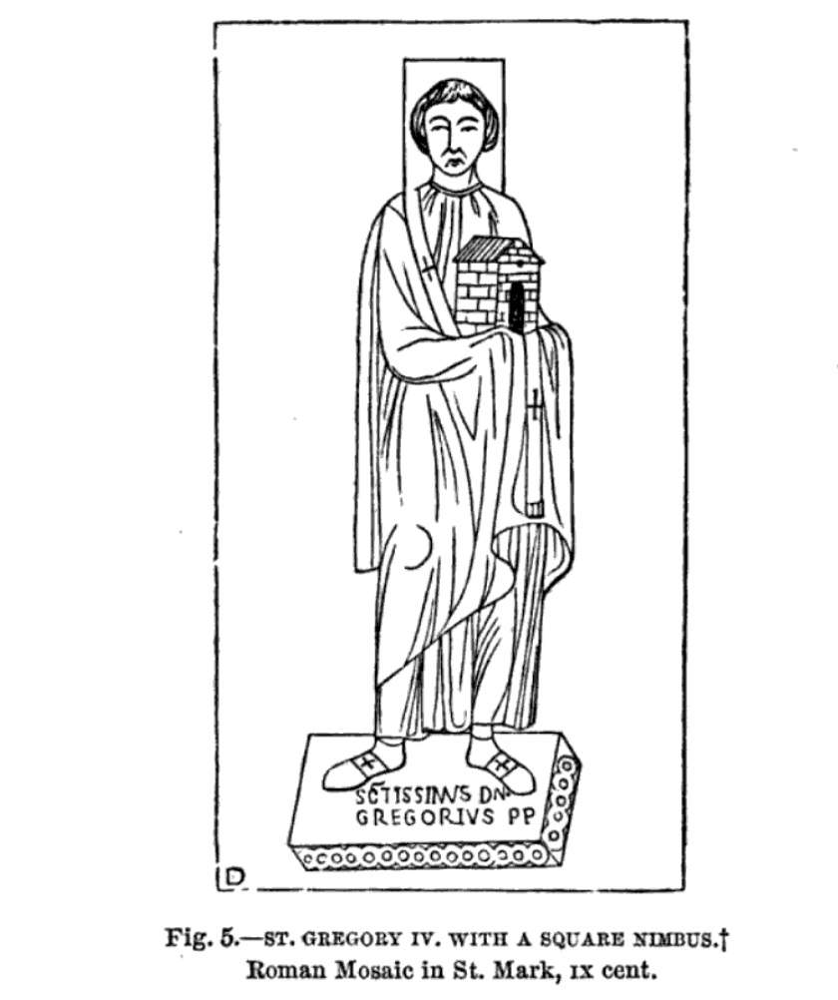

Saint Denis of Paris
Born and raised in Italy in the 3rd century AD, Denis was sent as a missionary to Gaul by Pope St. Clement. Denis made the base of his missionary activity in what is today Paris and for this reason is now known as the first bishop of Paris and the Apostle of France. Denis and his priestly companions were arrested and imprisoned for their missionary work. Denis was beheaded and it is said that afterwards he picked his mitred head up and walked for several miles, preaching a sermon along the way. The site where Denis stopped preaching and died was marked by a shrine that eventually developed into the Basilica of Saint-Denis, which became the burial place for the monarchs of France.
Crane of Classical Heraldry
As a symbol of heraldry the sole crane holding a stone was used to symbolize vigilance. Legend said that cranes lived along the banks of the Nile river and were preyed upon by Pygmees. To protect themselves at night, flocks of crane would charge one bird to watch duty, and that trusted bird would hold a stone in its claws so if the bird were to neglect their duties and fall asleep, it would drop the stone, thus awakening the other birds.
St. Gregory IV
Gregory IV was a native of Rome and the cardinal priest of St. Mark's when he was elected pope in 827. In addition to his involvment in the Carolingian quarrels, he was canonized for his committment to the architectural development of the church in Rome, helping to rebuild St. Mark's Basilica and the atrium of St. Peter's Basilica. Attributed to his role in rebuilding Rome, he is often presented holding church buildings in his hands.

The Holy Ghost
As one part of the Trinity, the Holy Ghost is represented in various ways throughout history. Here we see an image of the Holy Ghost as child floating at sea and an image of the Holy Ghost as a dove emblazoned on a standard.